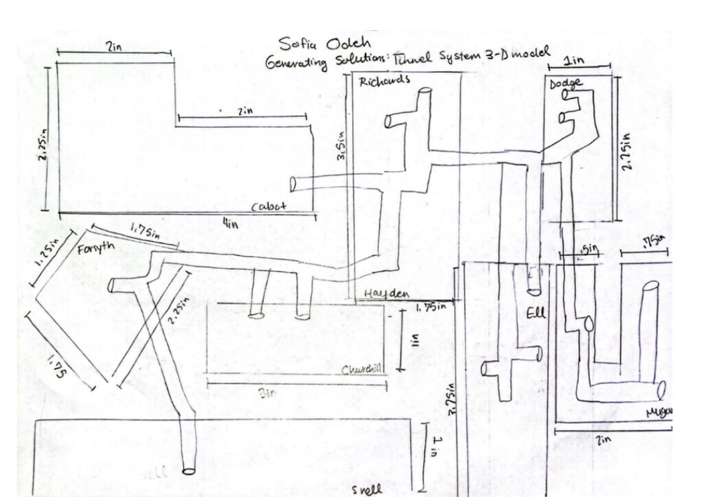
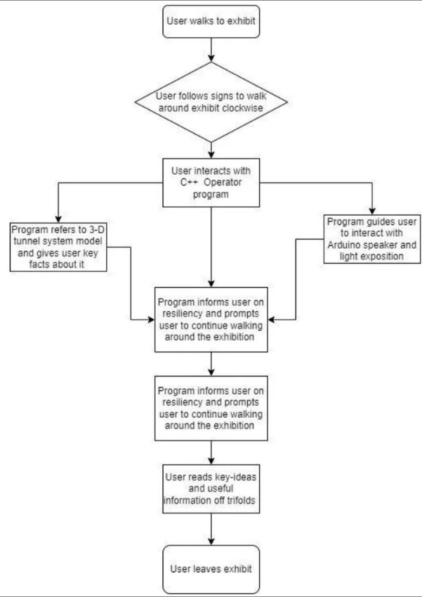
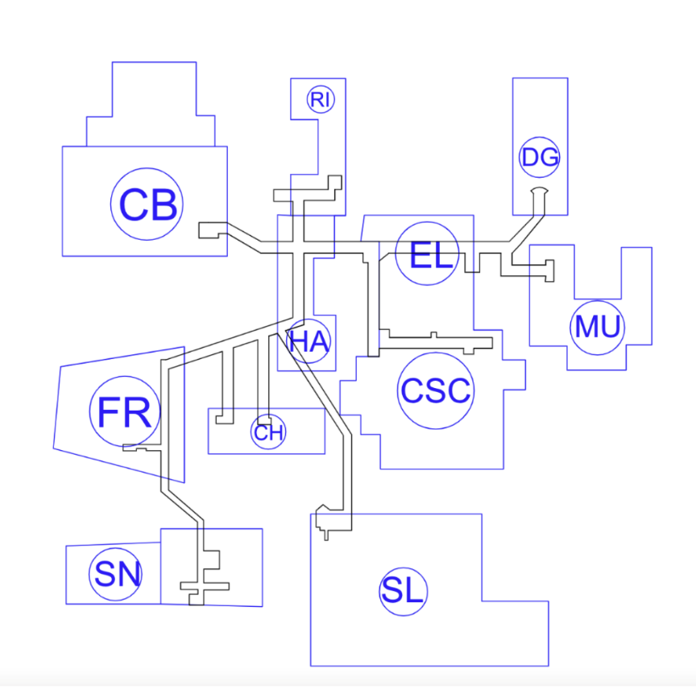
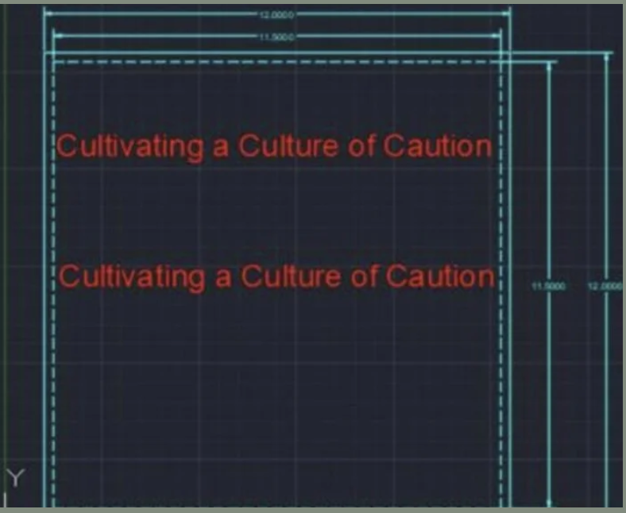
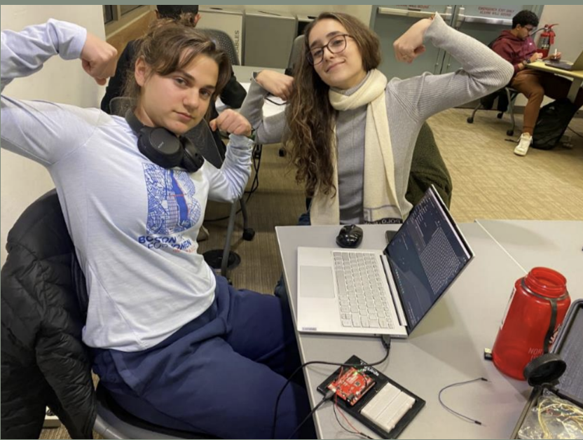
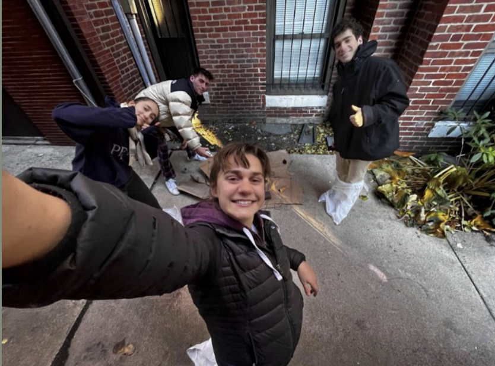

GE.1501/GE.1502, a required course for mechanical engineering students at Northeastern University, compresses a year-long curriculum into one semester, teaching deadline management and time organization. Our team of four tackled the challenge of creating an educational museum exhibit for first-year non-engineering students.
Inspired by recent security alerts on campus, we aimed to leverage this relatable topic to brainstorm ways to enhance the Northeastern community's resilience to campus dangers. Our exhibit, "Cultivating a Culture of Caution," educates visitors about emergency preparedness and campus safety systems.
4 mechanical engineering students working collaboratively across all phases
My Role: Project Manager for Milestone 1, Lead Programmer, CAD Designer
Our interactive exhibit had to meet specific Museum of Science requirements while remaining engaging and educational:
$100 maximum
Self-contained operation
No water usage
Arduino integration
The team developed comprehensive sketches and designs for different aspects of the exhibit. I was responsible for creating a 3D model of the Northeastern tunnel system, allowing users to understand emergency evacuation routes and different escape paths in case of dangerous situations.

3D model of Northeastern's tunnel system for emergency evacuation

User interaction flowchart for the museum exhibit
This phase focused on bringing our concept to life through programming and fabrication. I developed the interactive C++ program simulating a 911 operator experience, integrating Arduino sensors for user input.

Technical drawings showing exhibit dimensions and component placement

"Cultivating a Culture of Caution" - Final exhibit title display
The final phase involved assembling all components into a cohesive, interactive exhibit. We presented to both non-engineering students and engineering peers, successfully achieving our goal of educating the community about campus safety and resilience.

Team collaboration during final assembly

Project team after successful presentation
Our exhibit incorporated multiple interactive elements to engage visitors and reinforce safety concepts:
"Cultivating a Culture of Caution" successfully educated visitors about campus safety while demonstrating the power of engineering to address real-world challenges. The project strengthened the Northeastern community's awareness of emergency resources and procedures.